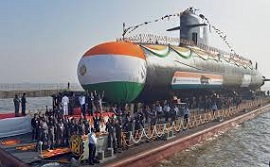
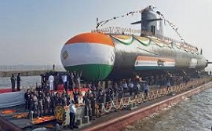

The Indian Navy is the naval branch of the Indian Armed Forces. The President of India is the Supreme Commander of the Indian Navy. The Chief of Naval Staff, a four-star admiral, commands the navy. The Indian Navy traces its origins back to the East India Company's Marine which was founded in 1612 to protect British merchant shipping in the region. In 1793, the East India Company established its rule over eastern part of the Indian subcontinent i.e. Bengal, but it was not until 1830 that the colonial navy was titled as His Majesty's Indian Navy. When India became a republic in 1950, the Royal Indian Navy as it had been named since 1934 was renamed to Indian Navy. The primary objective of the navy is to safeguard the nation's maritime borders, and in conjunction with other Armed Forces of the union, act to deter or defeat any threats or aggression against the territory, people or maritime interests of India, both in war and peace. Through joint exercises, goodwill visits and humanitarian missions, including disaster relief, Indian Navy promotes bilateral relations between nations. As of 1 July 2017, 67,228 personnel are in service with the Navy.[7][8] As of March 2018, the operational fleet consists of one aircraft carrier, one amphibious transport dock, eight landing ship tanks, 11 destroyers, 13 frigates, one nuclear-powered attack submarine, one ballistic missile submarine, 14 conventionally-powered attack submarines, 22 corvettes, one mine countermeasure vessel, four fleet tankers and various other auxiliary vessels.